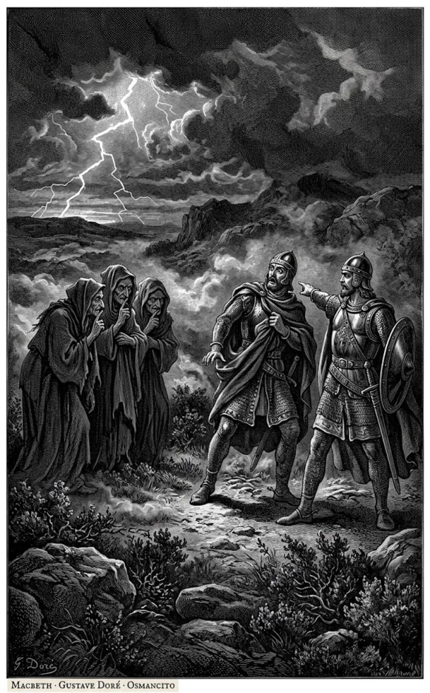
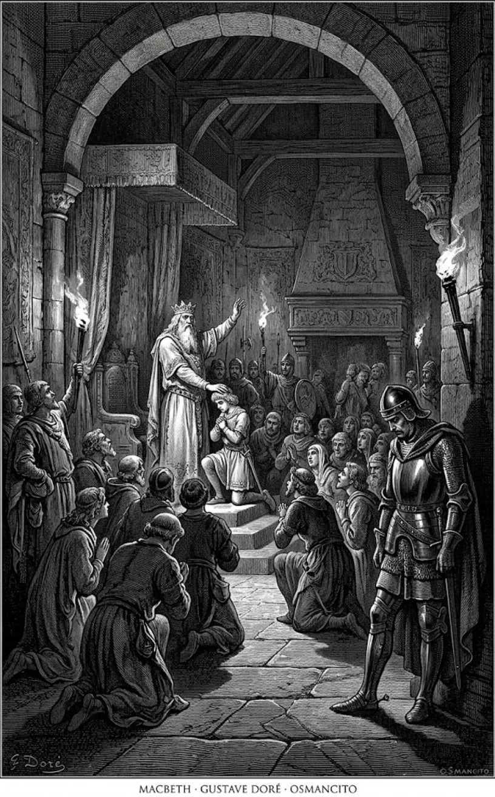
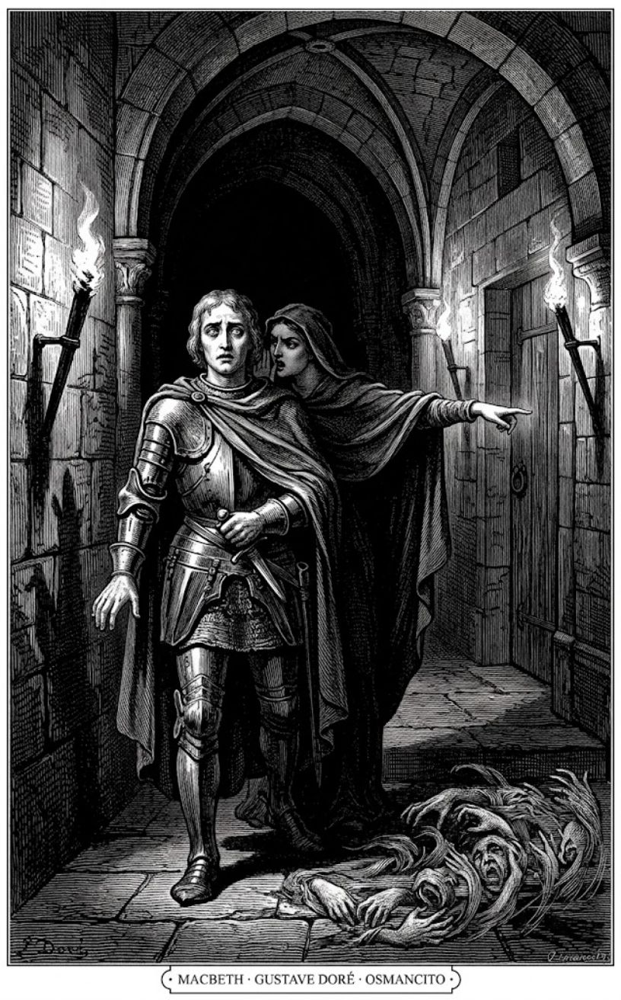
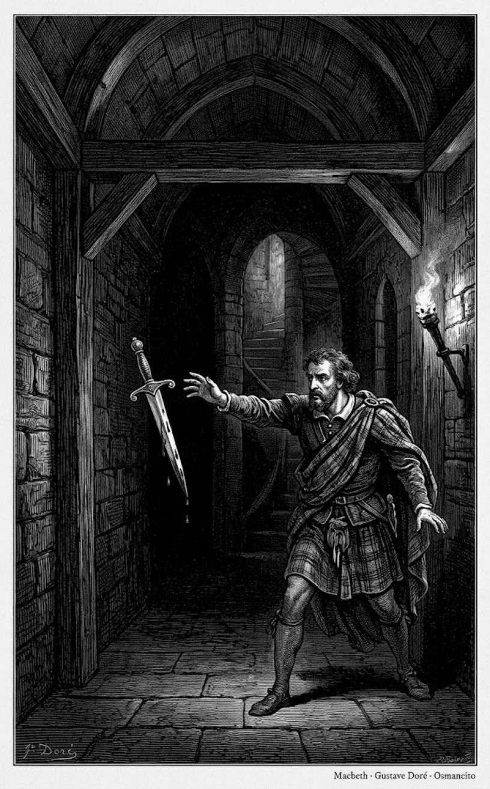
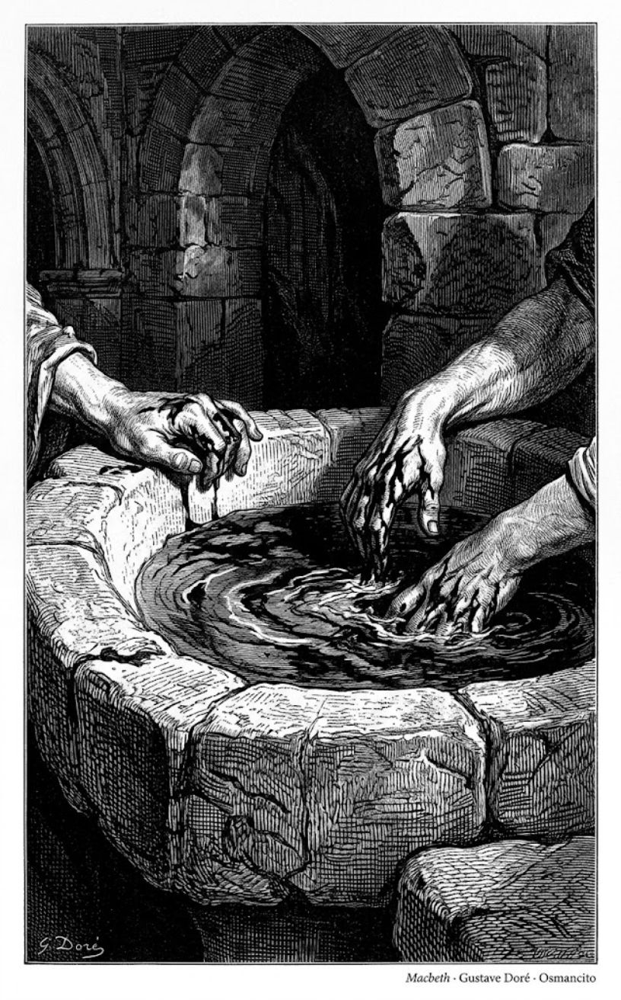

9 de octubre de 2026
Macbeth

William Shakespeare
Macbeth, el mejor general del rey Duncan, oye de tres brujas que será rey de Escocia, y la profecía le prende la ambición: empujado por su esposa, asesina al rey bajo su propio techo y ocupa el trono; de ahí en adelante solo puede sostenerlo con más crímenes, entre la culpa y el miedo, hasta que la misma profecía se cumple al revés. Es la tragedia más breve de Shakespeare y una de las más oscuras.
Acto I, escena 1

Trueno y relámpago. Tres brujas se citan para cuando acabe la batalla: «¿Cuándo volveremos a encontrarnos las tres?», pregunta la primera, y esa es la primera frase de la obra. Ya tienen el dónde (el páramo) y les falta decir con quién:
There to meet with Macbeth.
Allí, a encontrarnos con Macbeth.
Tercera bruja
Es la primera vez que suena el nombre de Macbeth, y suena en boca de una bruja. Las llaman sus espíritus (un gato, un sapo) y se van entre la niebla, cantando el mundo al revés:
Fair is foul, and foul is fair: Hover through the fog and filthy air.
Lo bello es feo, y lo feo es bello: volemos entre la niebla y el aire inmundo.
Las tres
Acto I, escena 2

El rey Duncan, acampado junto a la batalla, ve llegar a un capitán herido: «¿Quién es ese hombre ensangrentado?», la primera frase de la escena. Por su estado, dice el rey, podrá dar las últimas noticias de la rebelión. El capitán empieza: la cosa estaba pareja, el rebelde Macdonwald recibía refuerzos de las islas, pero Macbeth lo abrió del ombligo a las quijadas y clavó su cabeza en las almenas. El rey lo oye maravillado:
So well thy words become thee as thy wounds: They smack of honour both.
Tus palabras te sientan tan bien como tus heridas: ambas saben a honor.
Duncan
Apenas contada esa hazaña, el capitán trae la mala: ganada la primera pelea, vino otra:
Mark, King of Scotland, mark: No sooner justice had, with valour arm’d, Compell’d these skipping kerns to trust their heels, But the Norweyan lord, surveying vantage, With furbish’d arms and new supplies of men, Began a fresh assault.
Atienda, rey de Escocia, atienda. Apenas la justicia, armada de valor, obligó a esos kernos saltarines a fiar en sus talones, el señor noruego, viendo su ocasión, con armas bruñidas y nuevos refuerzos de hombres, lanzó un nuevo asalto.
Capitán
¿Se acobardaron Macbeth y Banquo? Al contrario, dice el capitán: como cañones cargados al doble. Entra Ross con la prisa en los ojos («Así ha de mirar quien viene a contar cosas extrañas», anota Lennox) y confirma la victoria: Noruega pide la paz y pagará diez mil dólares por enterrar a sus muertos. Queda el thane de Cawdor, el señor que resultó traidor, y de él se ocupa el rey:
No more that Thane of Cawdor shall deceive Our bosom interest.
Ese thane de Cawdor no volverá a engañar nuestra más íntima confianza.
Duncan
Sentenciado el traidor, su título viaja hacia Macbeth sin que él lo sepa todavía: «Lo que él ha perdido, el noble Macbeth lo ha ganado». Es la última frase de la escena, y suena a profecía.
Acto I, escena 3

Las tres brujas vuelven a encontrarse («¿Dónde has estado, hermana?», se preguntan, y esa es la primera frase de la escena) y se cuentan sus travesuras. Una le pidió castañas a la mujer de un marinero, la mujer la despachó a gritos, y la bruja juró vengarse del marido, que zarpó rumbo a Alepo: lo perseguirá navegando en un colador, lo secará como heno, no lo dejará dormir. Enseña un trofeo: el pulgar de un piloto naufragado. Suena un tambor:
Macbeth doth come.
Llega Macbeth.
Tercera bruja
Entran Macbeth y Banquo, de vuelta de la batalla, y la primera frase de Macbeth las imita sin saberlo: «Nunca vi un día tan feo y tan bello». Banquo descubre a las tres (marchitas, vestidas raro, con barba: «Deberíais ser mujeres, y sin embargo vuestras barbas me impiden afirmar que lo sois») y Macbeth les ordena hablar. Ellas saludan: «Salve, Macbeth, thane de Glamis», que ya es; «salve, Macbeth, thane de Cawdor», que no sabe que es; y la tercera remata:
that shalt be king hereafter!
¡Tú que serás rey después!
Tercera bruja
Macbeth se estremece («Mi buen señor, ¿por qué os sobresaltáis y parecéis temer cosas que suenan tan bien?», le dice Banquo). Banquo les pide su parte: si pueden mirar las semillas del tiempo y decir cuál grano crecerá y cuál no, que hablen para él, que ni mendiga ni teme sus favores ni su odio. Ellas responden con acertijos: «No tan feliz, y mucho más feliz», «Engendrarás reyes, aunque no lo seas». Y la primera:
Lesser than Macbeth, and greater.
Menor que Macbeth, y mayor.
Primera bruja
Macbeth quiere más («Hablad, os lo ordeno») y se disuelven en el aire. «La tierra tiene burbujas, como el agua», dice Banquo: ¿existieron de verdad, o comieron la raíz loca que aprisiona la razón? Se repiten uno al otro lo oído («Tus hijos serán reyes», «Tú serás rey»), y llegan Ross y Angus con el agradecimiento del rey y un título nuevo:
And, for an earnest of a greater honour, He bade me, from him, call thee Thane of Cawdor: In which addition, hail, most worthy thane, For it is thine.
Y como prenda de un honor mayor, me mandó que de su parte te llame thane de Cawdor. Con ese título, salve, digno thane, pues es tuyo.
Ross
«¿Puede el diablo decir verdad?», se asombra Banquo. El thane de Cawdor vive todavía, pero confesó su traición y la pagará. Macbeth se mira el título como un traje prestado («¿Por qué me vestís con ropas prestadas?»), y luego, a solas, se le escapa lo que la profecía le está haciendo por dentro:
I am Thane of Cawdor: If good, why do I yield to that suggestion Whose horrid image doth unfix my hair, And make my seated heart knock at my ribs, Against the use of nature?
Soy thane de Cawdor. Si es bueno, ¿por qué cedo a esa sugestión cuya imagen horrible me eriza el cabello y hace que mi corazón sentado golpee contra mis costillas, contra el uso de la naturaleza?
Macbeth
Dos verdades se cumplieron ya, y lo mayor «viene detrás». Decide no mover un dedo: «Si el azar quiere que yo sea rey, el azar podrá coronarme sin que yo me mueva». Banquo advierte en voz baja que los instrumentos de la oscuridad suelen decir verdades pequeñas para traicionar en lo hondo. Macbeth corta: «Vayamos hacia el Rey», y la última frase es suya: «Venid, amigos».
Acto I, escena 4

En el palacio de Forres, el rey pregunta: «¿Se ha hecho la ejecución de Cawdor?», la primera frase de la escena. Malcolm responde con lo que le contó un testigo: el traidor confesó, pidió perdón y murió muy entero:
Nothing in his life Became him like the leaving it; he died As one that had been studied in his death, To throw away the dearest thing he ow’d As ’twere a careless trifle.
Nada en su vida le sentó tan bien como dejarla; murió como quien hubiera estudiado su muerte, para arrojar lo más caro que poseía como una bagatela sin importancia.
Malcolm
Duncan suspira: «No hay arte que permita hallar en el rostro la construcción del alma: era un caballero en quien yo puse una confianza absoluta». En eso entra Macbeth, el nuevo Cawdor, y el rey se le echa encima de gratitud: no alcanzan las alas del premio para cogerlo; ha plantado a Macbeth y Banquo y piensa hacerlos crecer. Y entonces anuncia que el reino quedará fundado sobre su primogénito, Malcolm, «a quien llamaremos desde ahora príncipe de Cumberland». La corte aplaude. Macbeth, a solas, ve el obstáculo:
—That is a step On which I must fall down, or else o’erleap, For in my way it lies.
Ese es un escalón en el que he de caer, o bien saltar por encima, pues está en mi camino.
Macbeth
«Estrellas, esconded vuestros fuegos; que la luz no vea mis negros y profundos deseos». Cierra la escena el rey, sin sospechar nada: «Sigámoslo, que su cuidado se ha adelantado para darnos la bienvenida. Es un pariente sin igual». Van todos a dormir a casa de Macbeth.
Acto I, escena 5

En Inverness, Lady Macbeth lee la carta de su marido (la primera frase de la escena es de la carta: «Me encontraron el día del éxito»): las brujas lo saludaron thane de Cawdor y «salve, rey que serás». Ella lo celebra y lo teme: «Pero temo tu naturaleza: está demasiado llena de la leche de la bondad humana para tomar el camino más corto». Quiere tenerlo ya al lado:
Hie thee hither, That I may pour my spirits in thine ear, And chastise with the valour of my tongue All that impedes thee from the golden round, Which fate and metaphysical aid doth seem To have thee crown’d withal.
Date prisa en venir, para que vierta mis espíritus en tu oído y castigue con el valor de mi lengua todo cuanto te aparta del círculo de oro con que el destino y la ayuda sobrenatural parecen querer coronarte.
Lady Macbeth
Llega un mensajero: el rey viene esta noche («¡Estás loco de decirlo!», responde ella). Sola, oye graznar al cuervo la entrada fatal de Duncan bajo sus almenas y pide a los espíritus que la dessexen («quitadme aquí el sexo»), que le cambien la leche por hiel, que la noche cubra el cuchillo para que el cielo no grite «¡Detente!». Llega Macbeth. Ella lo recibe ya coronado («¡Grande Glamis, digno Cawdor, mayor que ambos por el salve del porvenir!»), él dice que Duncan se va mañana, y ella: «¡Oh, nunca verá el sol ese mañana!». Y le da su primera lección de hipocresía:
Your face, my thane, is as a book where men May read strange matters.
Tu rostro, mi thane, es como un libro donde los hombres pueden leer cosas extrañas.
Lady Macbeth
«Parece la flor inocente, pero sé la serpiente que hay debajo», y toma el mando de la noche:
He that’s coming Must be provided for; and you shall put This night’s great business into my dispatch; Which shall to all our nights and days to come Give solely sovereign sway and masterdom.
Al que viene hay que proveerlo; y tú pondrás el gran asunto de esta noche en mis manos, que a todas nuestras noches y días por venir dará solo soberanía y señorío.
Lady Macbeth
Macbeth balbucea «hablaremos después». La última frase es de ella: «Déjame todo lo demás a mí».
Acto I, escena 6

Ante el castillo. «Este castillo tiene un asiento agradable», dice el rey, la primera frase de la escena, y Banquo le señala los vencejos que anidan en cada saliente y alero: donde ese pájaro cría, el aire es delicado. Todo lo que ven es dulce, y todo es trampa. Sale a recibirlos la anfitriona, con reverencias dobles y palabras de casa honrada. El rey le da la mano:
Fair and noble hostess, We are your guest tonight.
Bella y noble anfitriona, esta noche somos vuestro huésped.
Duncan
Ella responde que todo lo que tienen, y ellos mismos, es del rey y se lo devuelven en cuenta. Duncan pide que lo lleve con su anfitrión, al que quiere mucho, y la escena cierra con su despedida: «Con vuestro permiso, anfitriona».
Acto I, escena 7

Mientras dentro se cena, Macbeth se queda solo sopesando el golpe: «Si estuviera hecho cuando está hecho, entonces estaría bien que se hiciera pronto», la primera frase de la escena. Pero no hay golpe sin consecuencia: quien enseña el crimen aprende de vuelta. Duncan está bajo su techo en doble confianza, la de pariente y la de anfitrión. Y encima:
Besides, this Duncan Hath borne his faculties so meek, hath been So clear in his great office, that his virtues Will plead like angels, trumpet-tongued, against The deep damnation of his taking-off; And pity, like a naked new-born babe, Striding the blast, or heaven’s cherubin, hors’d Upon the sightless couriers of the air, Shall blow the horrid deed in every eye, That tears shall drown the wind.
Además, este Duncan ha llevado su poder con tanta mansedumbre, ha sido tan limpio en su alto oficio, que sus virtudes abogarán como ángeles, con lenguas de trompeta, contra la honda condenación de su muerte; y la piedad, como un niño recién nacido y desnudo, cabalgando la ráfaga, o como querubines del cielo montados en los corceles invisibles del aire, soplará el horrendo acto en todos los ojos, hasta que las lágrimas ahoguen el viento.
Macbeth
«No tengo espuela que pique los costados de mi intención, solo la ambición trepadora, que salta demasiado alto y cae del otro lado». Llega ella: el rey ya casi ha cenado. Él se retira: «No iremos más lejos en este asunto», y ella empieza a molerlo: ¿era la esperanza borracha? ¿así es su amor? ¿dejará «no me atrevo» esperando sobre «yo quisiera», como el pobre gato del refrán? Él pide paz: «Me atrevo a todo lo que le cabe a un hombre». Ella contesta:
When you durst do it, then you were a man; And, to be more than what you were, you would Be so much more the man.
Cuando te atrevías a hacerlo, entonces eras un hombre; y para ser más de lo que eras, serías tanto más hombre.
Lady Macbeth
Y remata: ella ha amamantado, y aun así le arrancaría el pezón de las encías a su bebé sonriente y le estrellaría los sesos, si lo hubiera jurado como él juró esto. «¿Y si fallamos?», pregunta él. «Atornilla tu valor hasta el punto justo, y no fallaremos»: el plan es emborrachar a los dos camareros del rey, dejarlo solo y echarles la culpa con sus propias dagas. Macbeth queda rendido («Trae al mundo solo hijos varones, pues tu temple intrépido no debe engendrar sino hombres») y resuelto:
I am settled, and bend up Each corporal agent to this terrible feat.
Estoy decidido, y tenso cada agente de mi cuerpo para esta terrible hazaña.
Macbeth
Y salen a cenar. La última frase es suya: «Vamos, y burlemos al tiempo con la apariencia más bella: un rostro falso ha de ocultar lo que sabe el corazón falso».
Acto II, escena 1

Medianoche en el castillo. Banquo y su hijo Fleance cruzan el patio («¿Cómo va la noche, muchacho?», la primera frase de la escena): la luna ya cayó, «hay economía en el cielo: todas sus velas están apagadas». Banquo entrega la espada al muchacho: le pesa el sueño como plomo, y no quiere dormir, y dice por qué:
Merciful powers, Restrain in me the cursed thoughts that nature Gives way to in repose!
Poderes misericordiosos, contened en mí los pensamientos malditos a los que la naturaleza cede en el reposo.
Banquo
Sobró decirlo: «Anoche soñé con las tres Hermanas Fatídicas: a vos os han mostrado algo de verdad». Aparece Macbeth, de ronda. Banquo le cuenta que el rey se recogió feliz y le manda un diamante a la anfitriona; Macbeth tienta a Banquo: «Si os mantenéis de mi parte cuando llegue el momento, os traerá honor». La respuesta de Banquo es limpia:
So I lose none In seeking to augment it, but still keep My bosom franchis’d, and allegiance clear, I shall be counsell’d.
Mientras no pierda ninguno al buscar aumentarlo, y conserve libre mi pecho y limpia mi lealtad, aceptaré consejo.
Banquo
Se despiden. Solo, esperando la campana convenida, Macbeth la ve: una daga en el aire, el mango hacia su mano:
Come, let me clutch thee:— I have thee not, and yet I see thee still.
Ven, déjame aferrarte. No te tengo, y aun así te sigo viendo.
Macbeth
«¿No eres sino una daga de la mente, una falsa criatura nacida de un cerebro oprimido por el calor?»; la ve con gotas de sangre en la hoja, y no hay tal cosa: es el negocio sangriento el que así informa a sus ojos. La noche está muerta, la brujería celebra sus ofrendas, el asesinato marcha con paso de fantasma. «Mientras yo amenazo, él vive»: las palabras enfrían los actos. Suena la campana. «La campana me invita», y la última frase de la escena es para el que duerme: «No la oigas, Duncan, pues es un toque de difuntos que te llama al cielo o al infierno».
Acto II, escena 2

Lady Macbeth espera en la oscuridad, y la primera frase de la escena es su brindis feroz: lo que emborrachó a los camareros la ha hecho a ella valiente; lo que los apagó a ellos, a ella le dio fuego. Chilla un búho («el fatal sereno, que da las buenas noches más severas»). Las puertas están abiertas, los criados roncan con sus bebidas drogadas. Ella dejó las dagas listas. Y confiesa lo único que la detuvo:
I am afraid they have awak’d, And ’tis not done.
Temo que se hayan despertado y no esté hecho.
Lady Macbeth
Nada de eso: «Si no se hubiera parecido a mi padre mientras dormía, yo lo habría hecho». Sale Macbeth del cuarto del rey: «He hecho la fechoría». Está deshecho: cree haber oído un ruido (¿quién duerme en la segunda alcoba? Donalbain), se mira las manos («Esto es un triste espectáculo»), y cuenta que uno de los durmientes rió, otro gritó «¡Asesinato!», dijeron sus oraciones, y él:
Methought I heard a voice cry, “Sleep no more!
Me pareció oír una voz que gritaba: «¡No dormiréis más!
Macbeth
«Pero ¿por qué no pude pronunciar «Amén»? Yo tenía más necesidad que nadie de bendición, y el «Amén» se me atascó en la garganta». Ella lo corta: pensar estas cosas así volverá locos a los dos. Pero él siguió oyendo la voz por toda la casa: «Glamis ha asesinado el sueño, y por eso Cawdor no dormirá más. ¡Macbeth no dormirá más!». Ella lo manda a lavarse «ese sucio testigo» y a devolver las dagas para untar de sangre a los camareros. Él no vuelve ahí ni muerto («Me da miedo pensar lo que he hecho; volver a mirarlo, no me atrevo»), así que va ella («Los dormidos y los muertos no son más que pinturas»). Llaman a la puerta del sur. Macbeth se mira las manos como si fueran ajenas:
Ha, they pluck out mine eyes!
¡Ah, me arrancan los ojos!
Macbeth
«¿Lavará todo el océano del gran Neptuno esta sangre de mi mano hasta dejarla limpia? No: esta mano mía más bien enrojecerá los mares multitudinarios, volviendo roja la verde inmensidad». Ella vuelve con las manos del mismo color («Mis manos son de tu color, pero me da vergüenza llevar un corazón tan blanco») y lo arrastra a acostarse: «Un poco de agua nos limpia de este acto. ¡Qué fácil es, entonces!». Más golpes en la puerta. Macbeth se queda atrás un instante:
To know my deed, ’twere best not know myself.
Para conocer mi acto, lo mejor sería no conocerme.
Macbeth
Y cierra la escena con el aldabonazo y su deseo: «¡Despierta a Duncan con tus golpes! ¡Ojalá pudieras!».
Acto II, escena 3

«¡Esto sí que es un llamar!»: la primera frase de la escena es del portero, que abre la puerta del castillo medio dormido y jugando a ser el portero del infierno. Va dejando pasar a sus condenados: un labrador que se ahorcó esperando abundancia, un sastre inglés ladrón de paño, y este:
Faith, here’s an equivocator, that could swear in both the scales against either scale, who committed treason enough for God’s sake, yet could not equivocate to heaven: O, come in, equivocator.
Pues aquí hay un equivocador, que juraría en ambos platos de la balanza contra cualquiera de ellos; que cometió traición de sobra por amor de Dios, y aun así no pudo llegar al cielo con sus equívocos. Oh, entra, equivocador.
Portero
(El equivocador: el que jura por ambos platillos de la balanza; alusión a los jesuitas de la pólvora, que mentían con verdad a medias, y eso no equivoca el camino al cielo.) «No hago más de portero del diablo», se cansa, y abre: son Macduff y Lennox. Entre chistes de taberna (la bebida provoca tres cosas: la nariz roja, el sueño y la orina; y con la lujuria, provoca el deseo y quita la ejecución), Macduff pregunta por el rey, que le mandó llamarlo temprano. Macbeth, ya vestido, lo guía: «Esta es la puerta». Lennox cuenta que la noche fue revuelta: chimeneas caídas, lamentos en el aire, gritos extraños de muerte, el pájaro oscuro clamando toda la noche; dicen que la tierra tenía fiebre y tembló. Sale Macduff del cuarto: «¡Oh horror, horror, horror!»:
Confusion now hath made his masterpiece!
¡La Confusión ha hecho ahora su obra maestra!
Macduff
«¡Despertad, despertad! Tocad la campana de alarma. ¡Asesinato y traición!». Sale Lady Macbeth preguntando qué negocio es ese, y Macduff: «Oh, gentil señora, no es para vos oír lo que puedo decir». Sale Banquo («Querido Duff, te ruego que te desdigas y digas que no es así»). Y sale Macbeth, de luto perfecto:
Had I but died an hour before this chance, I had liv’d a blessed time; for, from this instant There’s nothing serious in mortality.
Si yo hubiera muerto una hora antes de este suceso, habría vivido un tiempo bendito; pues desde este instante no hay nada serio en lo mortal.
Macbeth
Los hijos del rey, Malcolm y Donalbain, llegan al enterarse: los camareros aparecieron manchados de sangre, con las dagas sin limpiar sobre las almohadas. Y Macbeth suelta que los mató él, en un arrebato: «Oh, aún me arrepiento de mi furia, por haberlos matado». ¿Quién puede ser a la vez sabio, asombrado, templado y furioso, leal y neutral? Lady Macbeth se desvanece («¡Sacadme de aquí, oh!») y la apartan. Banquo convoca a juntarse y averiguar la obra sangrienta; todos juran contra la malicia traidora. Los dos hermanos se quedan atrás, hablando bajo: aquí «hay dagas en las sonrisas de los hombres: cuanto más cercano en sangre, más cercano a la sangre». Malcolm irá a Inglaterra, Donalbain a Irlanda:
This murderous shaft that’s shot Hath not yet lighted; and our safest way Is to avoid the aim.
Esta flecha asesina que se ha disparado aún no ha caído; y nuestro camino más seguro es evitar la puntería.
Malcolm
«Por tanto, a caballo», sin despedidas. La última frase es de Malcolm: «Hay licencia en el hurto que se roba a sí mismo cuando no queda misericordia».
Acto II, escena 4

Fuera del castillo, un viejo y Ross hablan de los presagios. «Recuerdo bien setenta años», dice el viejo en la primera frase de la escena, «pero esta noche dolorosa ha hecho bagatela de lo que sabía»: es de día y la noche oscura estrangula la lámpara viajera; el martes un búho ratonero mató a un halcón en su altura; los caballos de Duncan se volvieron salvajes, rompieron las caballerizas y, dicen, se comieron entre sí. El viejo lo resume:
’Tis unnatural, Even like the deed that’s done.
Es antinatural, igual que el acto cometido.
Viejo
Llega Macduff con las noticias: los culpables fueron «los que ha matado Macbeth», sobornados, dicen; y Malcolm y Donalbain huyeron, lo que hace caer la sospecha sobre ellos («¡Ambición pródiga, que devoras los medios de tu propia vida!»). La corona: Macbeth ya está nombrado y ha ido a Scone a ser investido; el cuerpo de Duncan va a Colmekill, la tumba sagrada de sus antepasados. Macduff no va a la coronación: se vuelve a Fife, no sin antes desearle a Ross, en la despedida, una frase con doble filo: «Bien, ojalá veáis allí las cosas bien hechas»; «¡no sea que nuestras ropas viejas nos sienten mejor que las nuevas!». Cierra la escena la bendición del viejo:
God’s benison go with you; and with those That would make good of bad, and friends of foes!
Que la bendición de Dios vaya con vos, y con los que quieran hacer bien del mal y amigos de enemigos.
Viejo
Osmancito, con la asistencia de Instinct